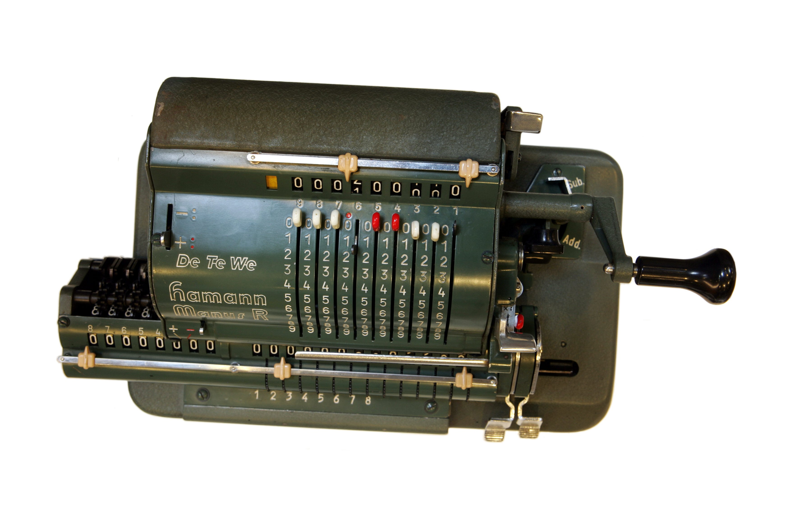

Mеханические вычислительные устройства — устройства для автоматизации вычислений, которые состоят из механических компонентов, таких как рычаги и шестерни, а не на основе электронных компонентов[1]. Наиболее распространенными примерами являются арифмометры и механические счётчики, которые используют повороты шестерёнок для сложения чисел. Более сложные примеры могут выполнять умножение и деление, и даже дифференциальный анализ (правда, большинство таких устройств использовали аналоговые методы) также Интегратор.
Механические вычислительные устройства достигли своего апогея во время Второй Мировой войны; они легли в основу комплекса бомбовых прицелов, включая прицел Нордена[en], в ПУАЗО, а также аналогичных устройств для судовых вычислений (например, Torpedo Data Computer).
Также заслуживают внимания механические пилотажные приборы для первых космических кораблей, которые обеспечивали компьютерный вывод не в виде цифр, а смещением индикатора поверхностей. Начиная от первого пилотируемого космического полета Юрия Гагарина и до 2002 года, каждый из советских и российских космических кораблей «Восток», «Восход» и «Союз» был оснащен прибором Глобус (англ.) [6][7][8], который с помощью часового механизма показывал текущее положение корабля над Землёй.
Механические вычислительные устройства продолжали использоваться в 1960-х годах[9], но в скором времени были заменены на электронные калькуляторы с дисплеями на электронных лампах-индикаторах[10], которые появились в середине 1960-х годов. Эволюция завершилась в 1970-х годах с введением дешевых карманных электронных калькуляторов. Механические вычислительные устройства были полностью вытеснены электронными в 1980-х годах.
Антикитерский механизм, ок. 100 до н. э.
Суммирующая машина Паскаля, 1642 — арифметическая машина Блеза Паскаля, которая могла непосредственно складывать и вычитать два числа, а также умножать и делить повторением действий.
Арифмометр Лейбница, 1672 — механический калькулятор Готфрида Вильгельма Лейбница который мог складывать, вычитать, умножать и делить.
Разностная машина Чарльза Бэббиджа, 1822 и 1837 — механические устройства Чарльза Бэббиджа.
Ball-and-disk integrator[en], 1886 — использовался Уильямом Томсоном для измерения высоты прилива путём вычисления коэффициентов ряда Фурье.
Marchant calculator[en], 1918 — самый сложный механический калькулятор.
Z1, 1938 — Конрад Цузе.
Калькулятор Курта, 1948.
MONIAC, 1949 — аналоговый компьютер, который использовался для моделирования экономики Великобритании.
Digi-Comp I[en], 1963 — 3-разрядный цифровой механический компьютер.
Dr. Nim[en] — середина 1960-х, механический компьютер, который умел играть в игру «ним».
Digi-Comp II[en], середина 1960-х, цифровой механический компьютер.
Автомат — механические устройства, которые могут хранить данные, производить вычисления, а также выполнять некоторые другие задачи.